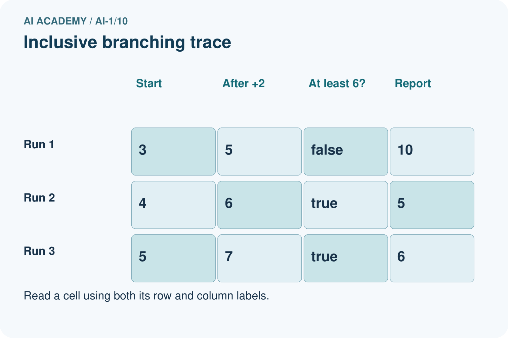
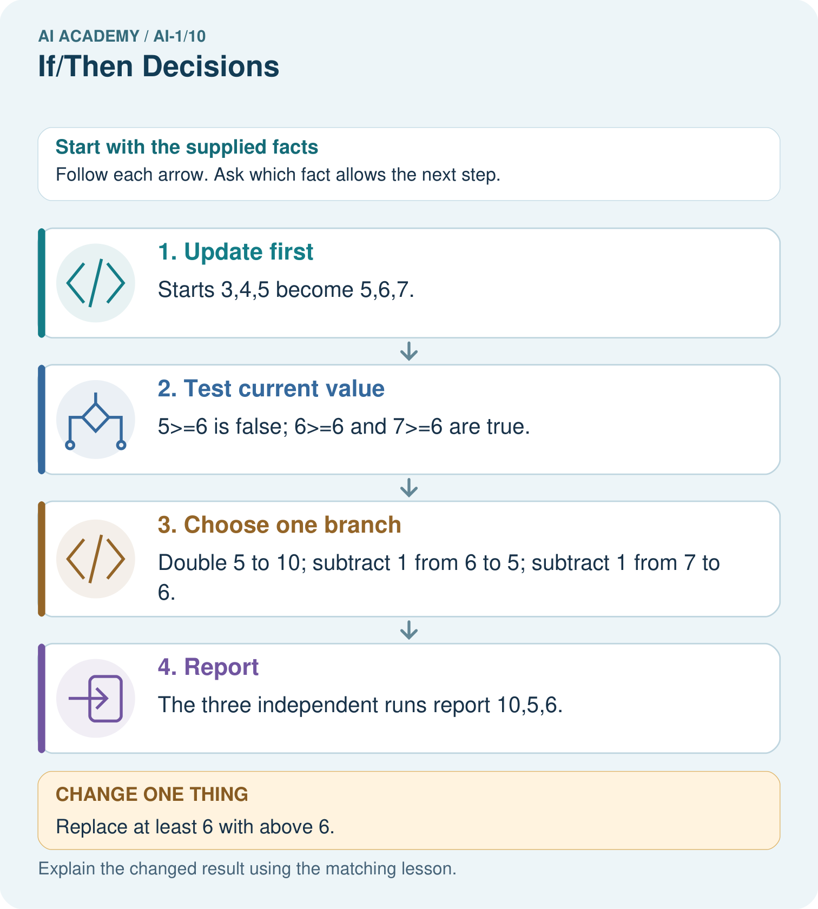

AI Academy · Level 1 · Grade 6 · Week 10 · Workbook
If/Then Decisions
Learn to understand, design, build, test and explain AI systems responsibly.
Project: Helpful Classroom Sorter
Workbook · 1 of 19
Recall and choose your starting point
Try the recall before opening notes. Then use a different colour or a labelled second line to correct your explanation.
Algorithms as Recipes
Without opening the old lesson, explain one key idea from Algorithms as Recipes. Give an example and a mistake that the idea helps you avoid.
Categories and Labels
Without opening the old lesson, explain one key idea from Categories and Labels. Give an example and a mistake that the idea helps you avoid.
Rules or Learned Patterns?
Without opening the old lesson, explain one key idea from Rules or Learned Patterns?. Give an example and a mistake that the idea helps you avoid.
Workbook · 2 of 19
Practise with fading help
Use W2: Read four boundary phrases for Conditions and boundary cases. Record the answer once; the lesson and workbook refer to the same attempt.
| Given inputs | Procedure I chose | Middle steps | Result and check |
|---|---|---|---|
Workbook · 3 of 19
Individual reasoning check
Use the worked case for Conditions and boundary cases. Proposed explanation: “The condition reads the starting value”. Decide whether this explanation is supported. Point to the step or supplied fact that decides; explain your repair if needed.
Workbook · 4 of 19
Independent transfer case
Independent case: Transfer the method to a new display
A paper brightness display adds 3 to its starting number. If the current brightness is at most 7, subtract 2; otherwise add 1. Report and stop. Trace separate runs from starting values 3, 4 and 5. Identify the run that tests equality. Then show how its result changes if at most 7 is accidentally written as below 7.
Attempt this case before feedback. Record any help. Earlier examples below are further practice; a case already practised with feedback cannot establish fresh transfer.
Workbook · 5 of 19
Your learning target
A club admits a visitor if they have a ticket AND an accompanying adult. Test all four yes/no combinations. A student changes AND to OR. Which outcomes change?
Workbook · 6 of 19
Solve the given case
If a card has a star, send it to A; otherwise send it to B.
Sort a star, a circle, and a card with both shapes.
Show your trace, calculation or evidence
Workbook · 7 of 19
Check a changed case
Use this exact rule: if a card has more than three dots, place it in tray A; otherwise use tray B. Trace cards with 2, 3 and 4 dots.
My independent answer and reason
Week 10 Test and reflect
Workbook · 8 of 19
Design a revealing test
Create a changed input, boundary case or missing-information case. Write the expected answer or safe response before testing.
| Test record | My evidence |
|---|---|
| Changed input or condition | |
| Expected answer or fallback | |
| Observed result | |
| Why the result occurred |
Workbook · 9 of 19
Project checkpoint
Add one transparent if/then branch and one else path to the Classroom Sorter.
The project change and evidence I will keep
Workbook · 10 of 19
Self check
I can explain the mechanism. I can show evidence. I can handle a changed case. I can name a limit. Mark each as not yet, with help or independently, and attach supporting work.
Teacher review ____________________ Next step ____________________
Workbook · 11 of 19
Transfer practice from the original programme
A club admits a visitor if they have a ticket AND an accompanying adult. Test all four yes/no combinations. A student changes AND to OR. Which outcomes change?
Record support used: none, hint or teacher explanation.
Workbook · 12 of 19
W1 Trace a decision from the current score
Use the paper-game procedure: add 2 to score; if score is at least 6 subtract 3, otherwise add 4; report and stop. Start at 2, then make a separate run starting at 5. For each run record the value at the condition, its true or false result, the branch and the final score.
Workbook · 13 of 19
W2 Read four boundary phrases
The known value at a condition is exactly 6. Decide whether each test is true or false: at least 6; above 6; at most 6; below 6. Explain which phrases include equality. Then name one value below and one value above 6 for neighbouring tests.
Workbook · 14 of 19
W3 Stop after the selected branch
In a separate decision the current score is 4. If score is at least 5 subtract 2; otherwise add 3; report and stop. A learner adds 3 to get 7, then subtracts 2 because 7 is now at least 5, and reports 5. Identify the extra action and give the correct trace and result.
Workbook · 15 of 19
W4 Transfer the method to a new display
A paper brightness display adds 3 to its starting number. If the current brightness is at most 7, subtract 2; otherwise add 1. Report and stop. Trace separate runs from starting values 3, 4 and 5. Identify the run that tests equality. Then show how its result changes if at most 7 is accidentally written as below 7.
Workbook · 16 of 19
W5 Handle an unknown input explicitly
The score is unreadable at the at-least-6 test. A helper says the test must be false and takes the otherwise branch. Explain what is unknown and why that choice is unjustified. State the next step required by this paper exercise and give two possible scores that would select different branches.
Workbook · 17 of 19
Feedback, return check and learning record
| Evidence | My record |
|---|---|
| Worked alone / hint / model | |
| First step I repaired and why | |
| New case checked later; date and result | |
| What I can now explain without notes | |
| One remaining question |
Revisit this idea with your teacher after a delay. Familiarity is different from explaining and using it on a changed case.
Workbook · 18 of 19
Pictorial case practice: If/Then Decisions
A fictional counter begins with a number, adds 2, then chooses one branch.
If the updated value is at least 6, subtract 1; otherwise double it.
Report once and stop. Use separate starting values 3,4,5.


Which input detects the difference between the two written conditions? Explain its entire run.
Support used: alone / hint / worked example. This record is practice evidence.
Project connection: Include equality examples when reviewing sorter conditions, and trace from original input through output.
Workbook · 19 of 19
Project portfolio milestone
Project: Helpful Classroom Sorter
Current milestone: Make a transparent first version. Keep a trace of how one input becomes an output; explain the rule or learned component.
Include equality examples when reviewing sorter conditions, and trace from original input through output.
| Evidence to keep | My record |
|---|---|
| This week’s input and deciding step | |
| Prediction and actual result (or labelled paper trace) | |
| One change since the previous checkpoint and why | |
| One error or limit and the next test |